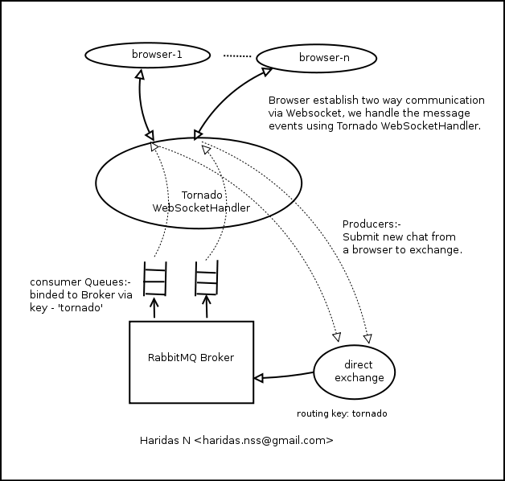

RabbitChat is a simple Web based chat system developed in Tornado Hight speed Python web framework. It uses Websoket for Full-duplex communication over http and RabbitMQ Broker for message transaction between server and connected clients.

read more
If you want to try this now, checkout a copy of project from this github ...
There are comments.